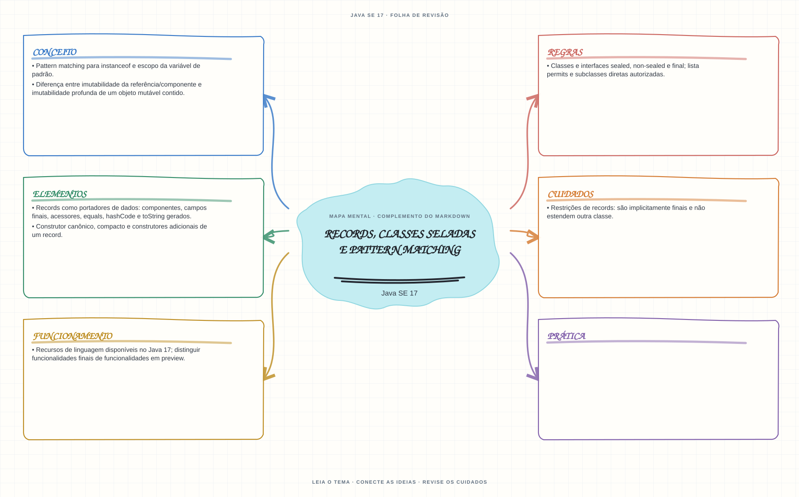

Ver mapa mental deste assuntoReconhecer os contratos e restrições de records e hierarquias sealed disponíveis no Java 17.
Aprofundamento e revisão 1Z0-829: use esta página depois dos fundamentos. Os tópicos de prova complementam a trilha inicial e não são pré-requisitos para começar a programar.
- Leia o objetivo e localize a ideia principal no conteúdo abaixo.
- Preveja o resultado, compile e execute o exemplo.
- Faça a atividade sem copiar a solução e confira a checagem comentada.
EXEMPLO DE CONSOLE
Veja a regra em execução
Antes de executar, anote sua previsão. Compile o exemplo com o JDK e compare a saída observada com as regras deste assunto.
Comandos para compilar e executar
javac -d target/bin src/03-poo/records-sealed-e-pattern-matching/RecordsSealedEPatternMatchingExample.java
java -cp target/bin RecordsSealedEPatternMatchingExampleA execução imprime o resultado no console para você comparar com sua previsão.
Consultar código-fonte: RecordsSealedEPatternMatchingExample.java
public class RecordsSealedEPatternMatchingExample {
private sealed interface Forma permits Circulo, Retangulo {
}
private record Circulo(double raio) implements Forma {
}
private record Retangulo(double largura, double altura) implements Forma {
}
public static void main(String[] args) {
System.out.println("=== Records, sealed e pattern matching ===");
System.out.println("Forma so pode ser implementada pelas classes declaradas em permits.");
Forma[] formas = {new Circulo(3.0), new Retangulo(4.0, 5.0)};
for (Forma forma : formas) {
if (forma instanceof Circulo circulo) {
System.out.println("Record Circulo: raio=" + circulo.raio()
+ ", equals compara componentes: "
+ circulo.equals(new Circulo(circulo.raio())));
} else if (forma instanceof Retangulo retangulo) {
System.out.println("Record Retangulo: largura=" + retangulo.largura()
+ ", altura=" + retangulo.altura());
}
}
}
}
PRATIQUE AGORA
Faça uma pequena alteração por conta própria
Crie um record simples para representar uma categoria e teste os métodos toString e equals gerados.
Concluído quando: o programa compilar, produzir o resultado esperado e você conseguir explicar a regra aplicada.
CHECAGEM RÁPIDA · Records, classes seladas e pattern matching
Um record pode estender uma classe definida pelo usuário?
Conferir resposta comentada
Não. Um record é implicitamente final e estende java.lang.Record; funcionalidades em preview devem ser diferenciadas das finais no Java 17.
Estude
- Records como portadores de dados: componentes, campos finais, acessores,
equals,hashCodeetoStringgerados. - Construtor canônico, compacto e construtores adicionais de um record.
- Restrições de records: são implicitamente finais e não estendem outra classe.
- Classes e interfaces
sealed,non-sealedefinal; listapermitse subclasses diretas autorizadas. - Pattern matching para
instanceofe escopo da variável de padrão. - Diferença entre imutabilidade da referência/componente e imutabilidade profunda de um objeto mutável contido.
- Recursos de linguagem disponíveis no Java 17; distinguir funcionalidades finais de funcionalidades em preview.
Prática
Crie um record com validação no construtor compacto e uma hierarquia sealed com subclasses permitidas. Identifique quais declarações não compilam.
Como este capítulo se relaciona com cada exame
POO básica é reaproveitável; records e sealed não existem em Java 8.
Base de estudo deste portal; confirme o mapeamento com o blueprint vigente.
Conceitos úteis; revise recursos de linguagem e regras de Java 21.
Orientação editorial sobre reaproveitamento do material; não representa objetivos oficiais nem garante cobertura do exame. Consulte o comparativo e as fontes da Oracle.